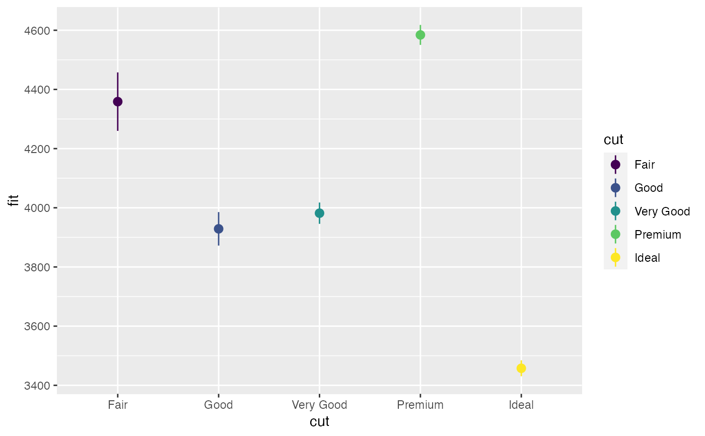
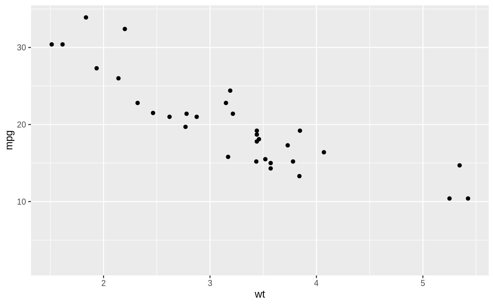
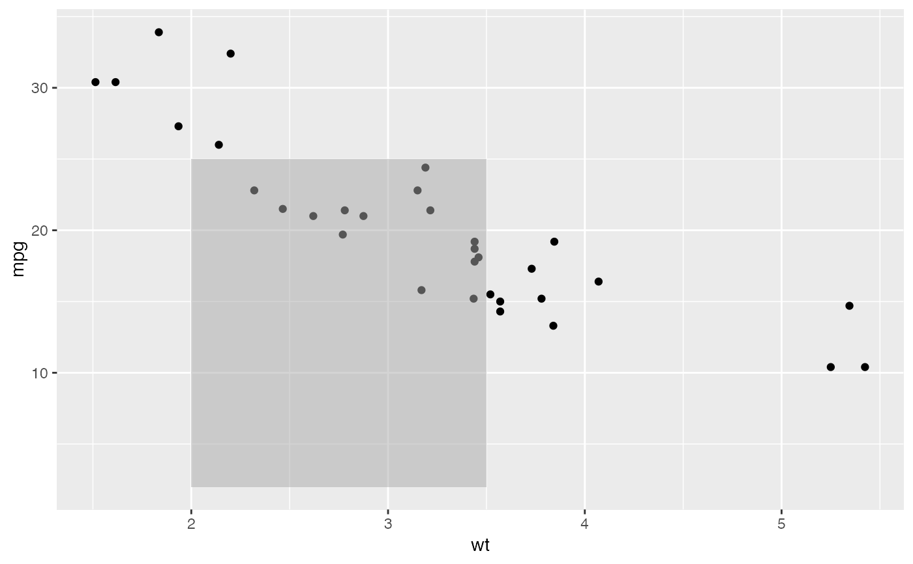
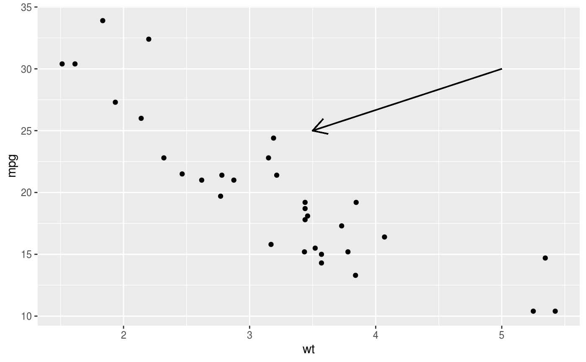
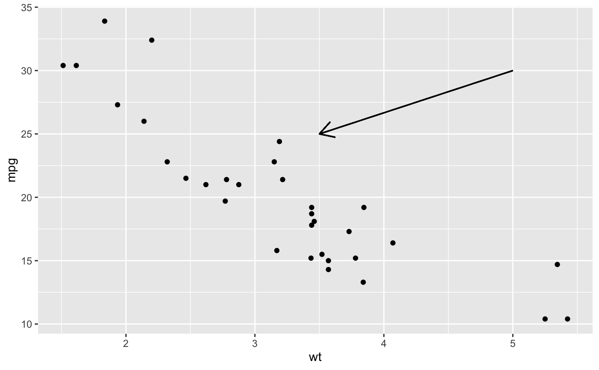
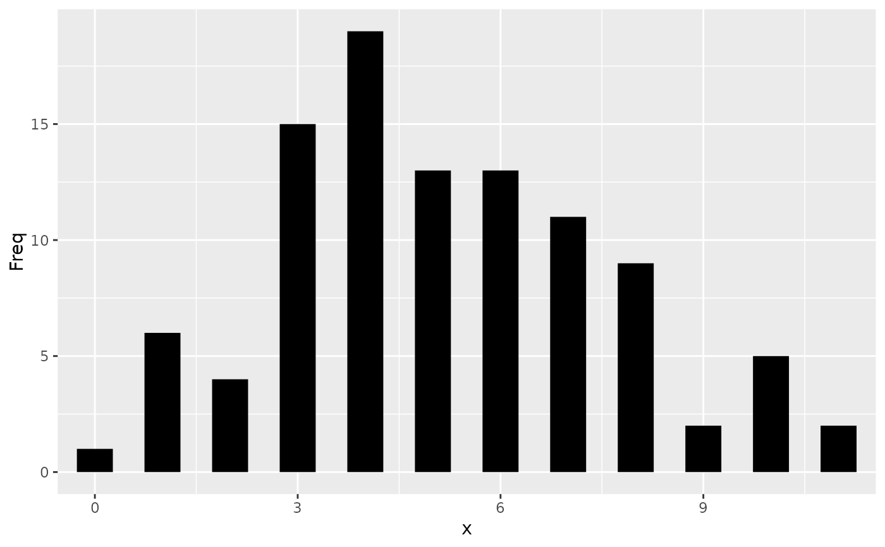
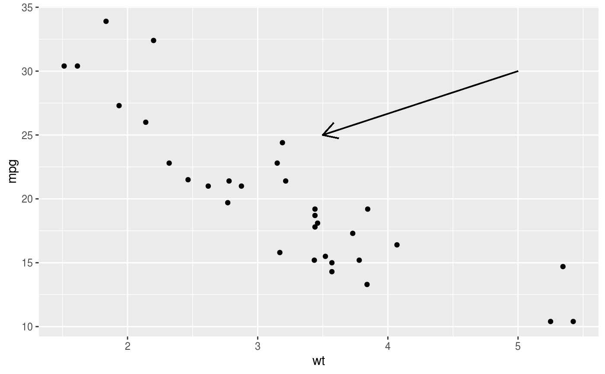
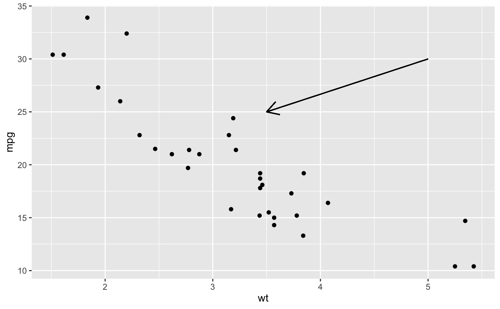
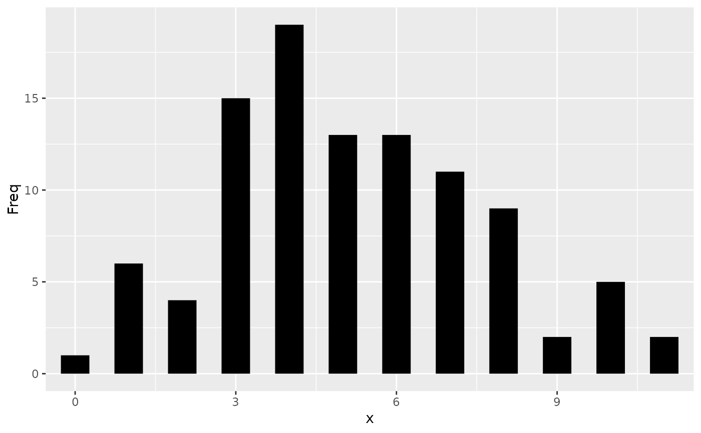

Position related aesthetics: x, y, xmin, xmax, ymin, ymax, xend, yend
Source:R/aes-position.R
aes_position.RdThe following aesthetics can be used to specify the position of elements:
x, y, xmin, xmax, ymin, ymax, xend, yend.
Details
x and y define the locations of points or of positions along a line
or path.
x, y and xend, yend define the starting and ending points of
segment and curve geometries.
xmin, xmax, ymin and ymax can be used to specify the position of
annotations and to represent rectangular areas.
In addition, there are position aesthetics that are contextual to the
geometry that they're used in. These are xintercept, yintercept,
xmin_final, ymin_final, xmax_final, ymax_final, xlower, lower,
xmiddle, middle, xupper, upper, x0 and y0. Many of these are used
and automatically computed in geom_boxplot().
Relation to width and height
The position aesthetics mentioned above like x and y are all location
based. The width and height aesthetics are closely related length
based aesthetics, but are not position aesthetics. Consequently, x and y
aesthetics respond to scale transformations, whereas the length based
width and height aesthetics are not transformed by scales. For example,
if we have the pair x = 10, width = 2, that gets translated to the
locations xmin = 9, xmax = 11 when using the default identity scales.
However, the same pair becomes xmin = 1, xmax = 100 when using log10 scales,
as width = 2 in log10-space spans a 100-fold change.
See also
Geoms that commonly use these aesthetics:
geom_crossbar(),geom_curve(),geom_errorbar(),geom_line(),geom_linerange(),geom_path(),geom_point(),geom_pointrange(),geom_rect(),geom_segment()Scales that can be used to modify positions:
scale_continuous(),scale_discrete(),scale_binned(),scale_date().See also
annotate()for placing annotations.
Other aesthetics documentation:
aes(),
aes_colour_fill_alpha,
aes_group_order,
aes_linetype_size_shape
Examples
# Generate data: means and standard errors of means for prices
# for each type of cut
dmod <- lm(price ~ cut, data = diamonds)
cut <- unique(diamonds$cut)
cuts_df <- data.frame(
cut,
predict(dmod, data.frame(cut), se = TRUE)[c("fit", "se.fit")]
)
ggplot(cuts_df) +
aes(
x = cut,
y = fit,
ymin = fit - se.fit,
ymax = fit + se.fit,
colour = cut
) +
geom_pointrange()

# Using annotate
p <- ggplot(mtcars, aes(x = wt, y = mpg)) + geom_point()
p

p + annotate(
"rect", xmin = 2, xmax = 3.5, ymin = 2, ymax = 25,
fill = "dark grey", alpha = .5
)

# Geom_segment examples
p + geom_segment(
aes(x = 2, y = 15, xend = 2, yend = 25),
arrow = arrow(length = unit(0.5, "cm"))
)
#> Warning: All aesthetics have length 1, but the data has 32 rows.
#> ℹ Please consider using `annotate()` or provide this layer with data
#> containing a single row.
 p + geom_segment(
aes(x = 2, y = 15, xend = 3, yend = 15),
arrow = arrow(length = unit(0.5, "cm"))
)
#> Warning: All aesthetics have length 1, but the data has 32 rows.
#> ℹ Please consider using `annotate()` or provide this layer with data
#> containing a single row.

p + geom_segment(
aes(x = 5, y = 30, xend = 3.5, yend = 25),
arrow = arrow(length = unit(0.5, "cm"))
)
#> Warning: All aesthetics have length 1, but the data has 32 rows.
#> ℹ Please consider using `annotate()` or provide this layer with data
#> containing a single row.

# You can also use geom_segment() to recreate plot(type = "h")
# from base R:
set.seed(1)
counts <- as.data.frame(table(x = rpois(100, 5)))
counts$x <- as.numeric(as.character(counts$x))
with(counts, plot(x, Freq, type = "h", lwd = 10))
ggplot(counts, aes(x = x, y = Freq)) +
geom_segment(aes(yend = 0, xend = x), size = 10)

p + geom_segment(
aes(x = 2, y = 15, xend = 3, yend = 15),
arrow = arrow(length = unit(0.5, "cm"))
)
#> Warning: All aesthetics have length 1, but the data has 32 rows.
#> ℹ Please consider using `annotate()` or provide this layer with data
#> containing a single row.

p + geom_segment(
aes(x = 5, y = 30, xend = 3.5, yend = 25),
arrow = arrow(length = unit(0.5, "cm"))
)
#> Warning: All aesthetics have length 1, but the data has 32 rows.
#> ℹ Please consider using `annotate()` or provide this layer with data
#> containing a single row.

# You can also use geom_segment() to recreate plot(type = "h")
# from base R:
set.seed(1)
counts <- as.data.frame(table(x = rpois(100, 5)))
counts$x <- as.numeric(as.character(counts$x))
with(counts, plot(x, Freq, type = "h", lwd = 10))
ggplot(counts, aes(x = x, y = Freq)) +
geom_segment(aes(yend = 0, xend = x), size = 10)
